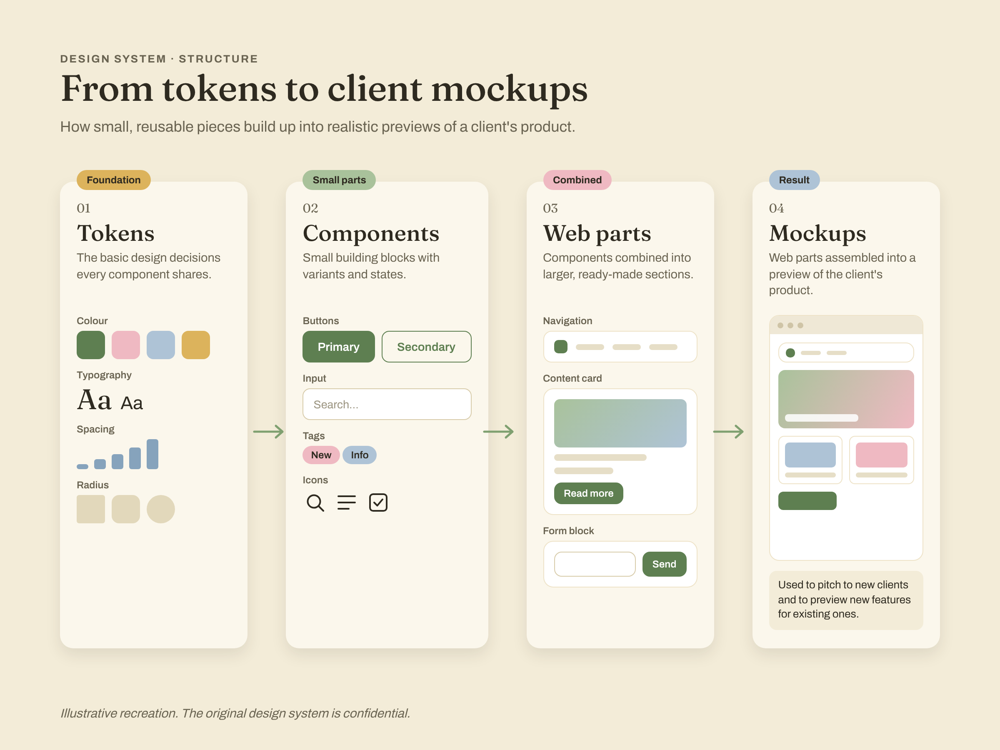
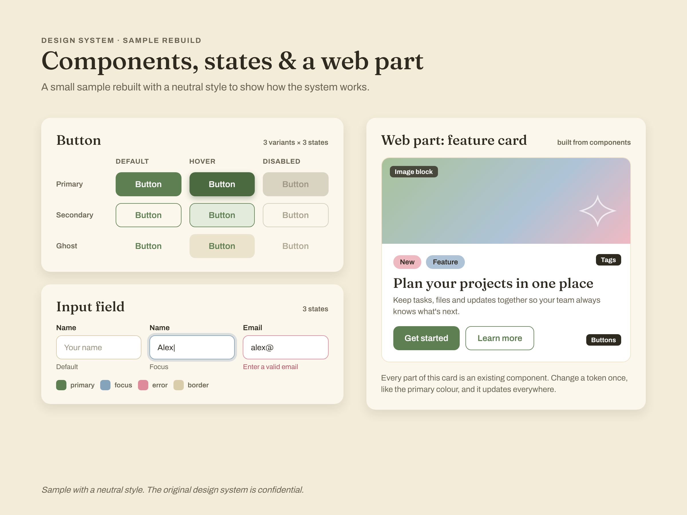
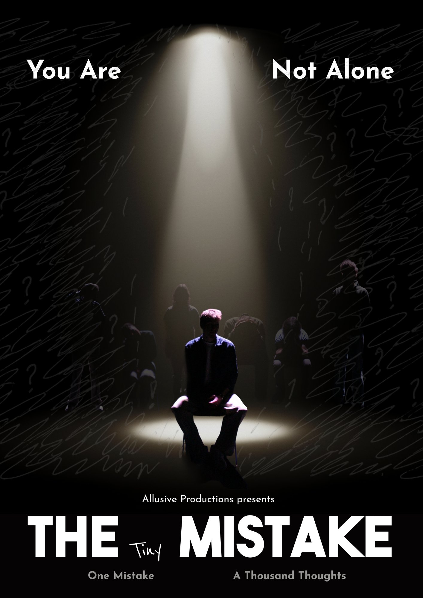
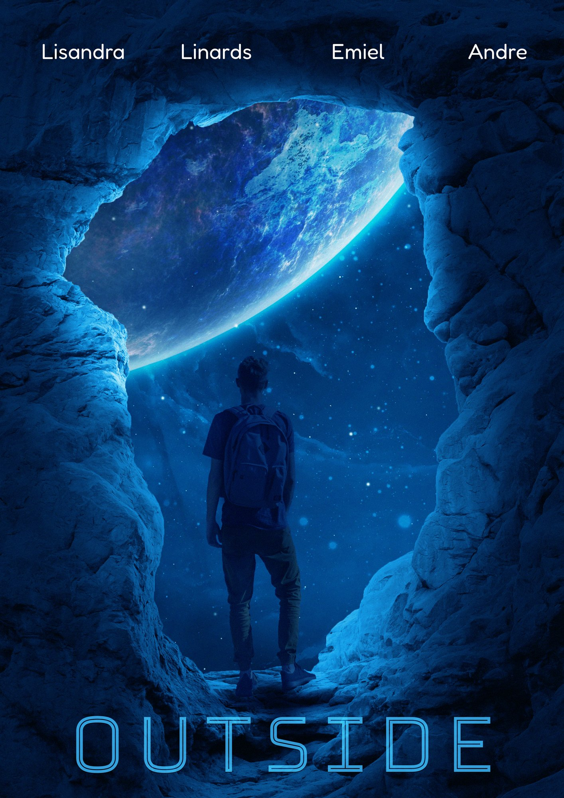
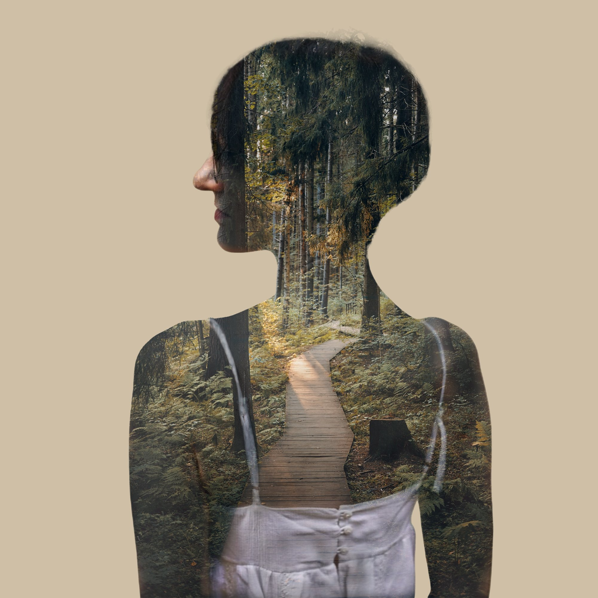
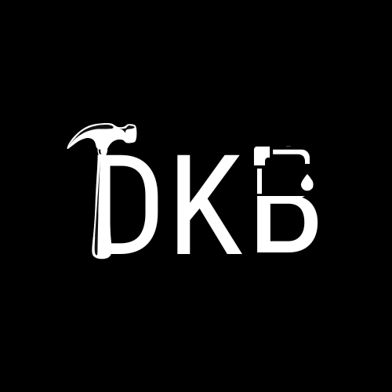
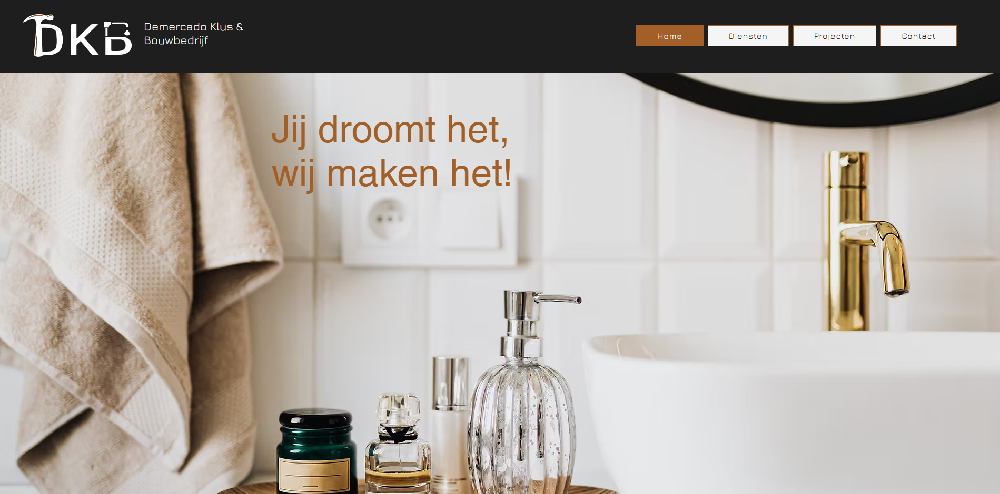
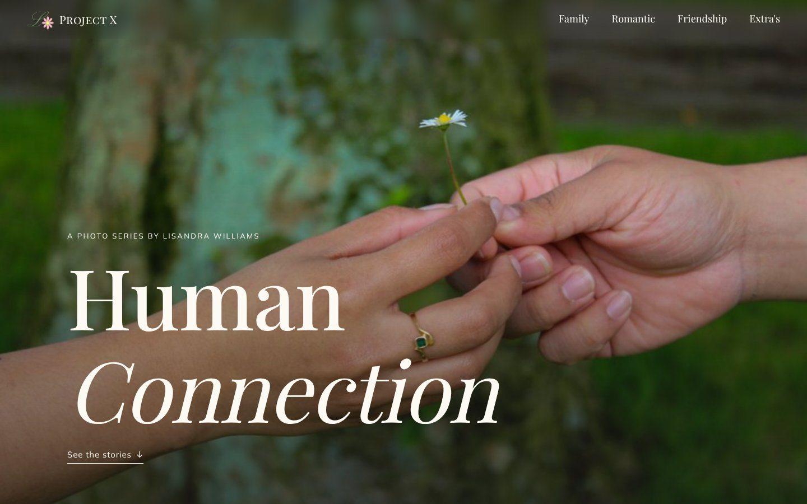

Hi, I'm Lisandra, welcome to my little corner of the internet.
I’m a final-year ICT student at Fontys in Eindhoven who loves turning complex information into clear, visual design.
I combine UI/UX, branding and communication design, building design systems, creating brand identities and coding my own designs.
Currently looking for a graduation internship from February 2027.
Works
A selection of projects across UI/UX, branding and communication design.

UI/UX
Design system
Print
Communication design
During my internship at a corporate company that provide their digital product to other businesses, I built a design system in Figma,
from small button components to larger web parts. The team uses it to mock up what a solution would look like
inside a client's product, both to pitch to new clients and to show existing clients how a new feature could look.
I also designed icons for their platform, visuals for their social media and print work in Illustrator.


Communication design
Print
In my Virtual Production semester, our team made a short movie.
I designed a poster to tease and promote it. And 2 other posters to display in the movie itself.



Branding
Web design
I created a logo for an client, then designed their website in Wix
so their new identity carried through online.


Photography
Web design
A project about human connection: I took all the photographs myself and built the website to show them.
It brought together two things I love, people and photography.
I'm Lisandra, a final-year ICT student at Fontys and a designer based in Eindhoven.
I've always been drawn to beautiful things, and design turned out to be the way I could make them myself.
Right now I work as a designer at the company where I did my internship. I build their design system in Figma
and create icons, social media visuals and print work. I love the moment a messy idea turns into something
clear and visual, and I like being able to code my own designs too.
Outside of design, I'm into photography and anything that brings people together. Human connection is what
I enjoy capturing most. Most evenings you'll find me hanging out with friends, eating good food,
or on my sofa watching a show.
I'm currently looking for a graduation internship from February 2027, where I can combine UI/UX,
branding and communication design.
Tools & focus
Figma
Design systems
Print production
Social content
WordPress / Elementor
Front-end code
Illustrator
Photography
Wix
Let's talk
Have a project in mind, or just want to say hi? Reach out.